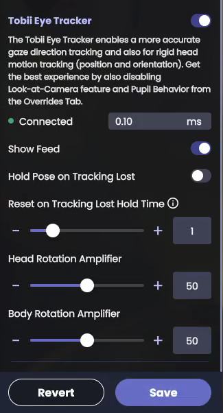

Animaze Desktop: How can use the Tobii Eye tracker in Animaze?
Use the Tobii Eye tracker to have super accurate gaze direction and rigid head motion tracking (position and orientation). To get the best experience with the Tobii Eye tracker, follow the steps below:
-
Connect your Tobii Eye tracker to your PC
-
Launch the Tobii Eye tracker control center / application
-
In the Tobii Eye tracker application, click on Settings > Improve Calibration to calibrate the tracker
-
Follow the on-screen prompts to complete the calibration
-
Go to Animaze > Advanced Tracking Configuration > Select Trackers and scroll down in the list to find and activate the Tobii Eye tracker
-
Toggle on the Gaze feed to see a visual representation of your eye movement and position.
-
In the event tracking is lost, turning the Hold Pose on Tracking Lost toggle on makes the avatar hold its last valid pose if tracking is lost. Turn the Hold Pose on Track Lost toggle off to make the avatar revert to a neutral pose in the event tracking is lost.
-
The Reset on Tracking Lost Hold Time toggle allows you to set the time the avatar will hold its last valid pose until it resets to a neutral pose or a valid pose from a different tracker if Tobii Eye tracking is lost.
-
Head Rotation Amplifier allows you to increase or decrease the ratio of your head rotation input to the avatar’s head rotation motion.
-
Body Rotation Amplifier allows you to increase or decrease the ratio of your body rotation input to the avatar’s body rotation motion.
-
Click on Save to save the changes made to the Tobii Eye tracker

Calibrate the trackers by pressing ctrl + C (This is a very important step!!!)
-
When the Tobii tracker is On, Ctrl+C calibrates the webcam tracker AND the Tobii tracker
-
To calibrate just Tobii, press ctrl + T
-
You can also open the Tobii Gaze feed from Advance Configuration -> Select Tracker tab